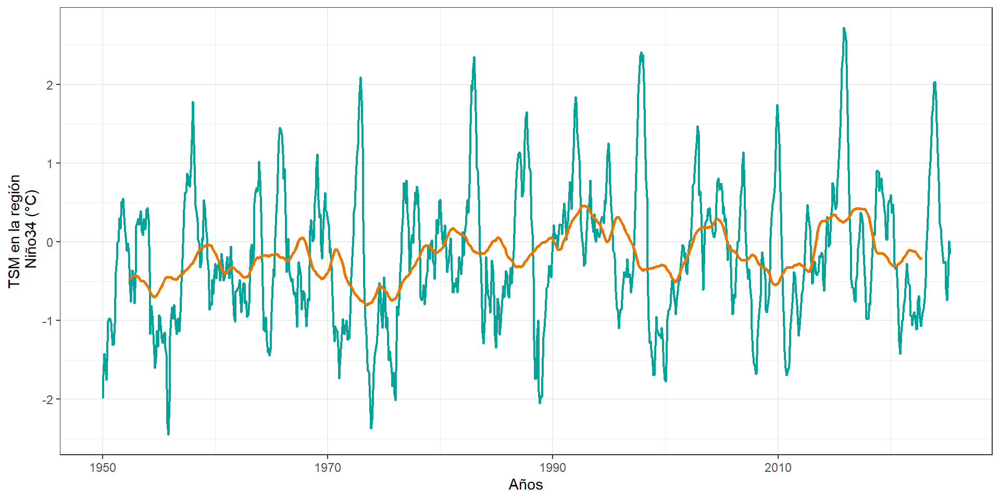
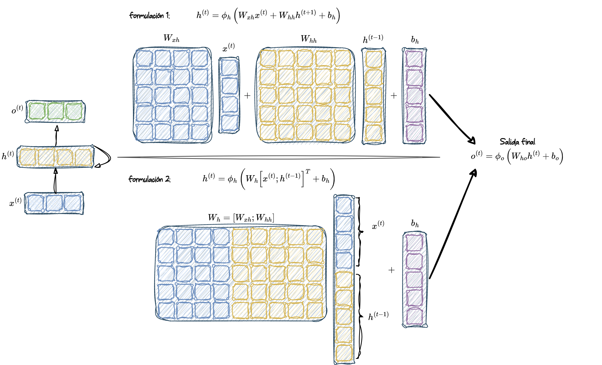

Sepal.Length Sepal.Width Petal.Length Petal.Width Species
1 6.1 2.9 4.7 1.4 versicolor
2 6.2 3.4 5.4 2.3 virginica
3 4.8 3.4 1.9 0.2 setosa
4 5.8 2.8 5.1 2.4 virginica
5 5.0 3.4 1.5 0.2 setosa
6 7.2 3.0 5.8 1.6 virginica
7 6.3 2.9 5.6 1.8 virginica
8 4.7 3.2 1.3 0.2 setosa
9 7.7 3.8 6.7 2.2 virginica
10 5.0 3.5 1.6 0.6 setosaDeep Learning
Unidad 4: Redes Neuronales Recurrentes (RNNs)
1 Redes Neuronales Recurrentes
1.1 Qué dice YouTube?
Algunos enlaces que pueden ser de interés
1.2 Datos secuenciales?
Datos secuenciales
Conjunto de observaciones recopiladas y ordenadas en función de un criterio temporal, espacial, o de cualquier otra dimensión en la que el orden de las observaciones sea esencial para su análisis.
Los algoritmos típicos de aprendizaje supervisado asumen que la entrada es independiente e idénticamente distribuida (IID), lo que significa que los ejemplos de entrenamiento son mutuamente independientes y tienen la misma distribución subyacente.
Si se tiene una muestra que consiste en \(n\) ejemplos de entrenamiento, \(x^{(1)}, x^{(2)}, \dots, x^{(n)}\), el orden en que se usan los datos para entrenar el algoritmo de aprendizaje automático no importa.
Ejemplo, los datos de iris
En el conjunto de datos **Iris**, cada flor ha sido medida de manera independiente, y las mediciones de una flor no influyen en las mediciones de otra flor.
Lo anterior no funciona cuando trabajamos con secuencias, donde por definición, el orden sí importa.
Ejemplo: Datos financieros
Supongamos que tenemos una muestra de \(n\) ejemplos de entrenamiento, que representa el valor de mercado de cierta acción en un día particular.
Si el objetivo es predecir el valor del mercado de esa acción para los próximos tres días, tendría sentido considerar los precios previos en un orden cronológico, como al emplear un modelo Autoregresivo (AR) de series de tiempo.
library(cryptoQuotes)
library(xts)
library(tidyverse)
BTC <- get_quote(
ticker = "BTCUSDT",
source = "binance",
futures = FALSE,
interval = "1d",
from = Sys.Date() - 90
)
data.frame(date = index(BTC),
BTC = BTC$close) %>%
mutate(date = as.POSIXct(date)) %>%
ggplot()+
geom_line(aes(x=date, y=close), color="#00a499", linewidth=1.5) +
ylab("Precio de BTC en (USD)") + xlab("Días") +
theme_minimal()1.3 Series de tiempo
Un recordatorio… o no?
Una serie de tiempo corresponde a una colección de observaciones \(y_t\), registradas en un tiempo específico \(t\).
Usualmente \(t \in \mathbb{Z}\), donde \(\mathbb{Z} = \{..., -2, -1, 0, 1, 2, ... \}\) es un conjunto de valores enteros positivos y negativos. En la práctica, sólo una parte finita de los datos está disponible, donde podemos escribir la serie de tiempo como \(\{y_1, y_2, ..., y_n \}\).
Formalmente, una serie de tiempo \(\{y_t \}\) corresponde a una realización de un proceso estocástico que está compuesto de variables aleatorias observadas a lo largo del tiempo.
Una serie de tiempo de tipo discreta, es aquella en la que la colección de tiempos \(T_0\) en la que se hacen las observaciones es un conjunto discreto.
Una serie de tiempo de tipo contínua es obtenida cuando las observaciones son tomadas de manera contínua sobre un intervalo de tiempo, por ejemplo \(T_0 = [0,1]\).
Una de las características principales de las series de tiempo es el hecho que observaciones sucesivas no son usualmente independientes, por lo que el análisis debe tomar en cuenta el orden temporal de las observaciones.

library(tidyverse)
library(ggplot2)
library(readr)
# Vino ----
# URL de los datos
url <- "https://raw.githubusercontent.com/rajansharm/Time-Series-Analysis/refs/heads/master/AusWineSales.csv"
# Leer los datos desde el enlace
wine_data <- read_csv(url)
# Convertir el campo 'YearMonth' a formato de fecha
wine_data$YearMonth <- as.Date(paste0(wine_data$YearMonth, "-01"))
# Crear el gráfico
wine =
ggplot(wine_data, aes(x = YearMonth, y = Red)) +
geom_line(color = "#00a499", linewidth = 0.7) +
geom_point(color = "#00a499", size = 2) +
labs(
x = "Años",
y = "Ventas de vino tinto\n en Australia"
) +
theme_bw()library(tidyverse)
library(ggplot2)
library(readr)
library(zoo)
# SST ----
url <- "https://psl.noaa.gov/data/correlation/nina34.anom.data"
data_raw <- read_lines(url)
data_lines <- data_raw %>%
.[-1] %>% # Eliminar automáticamente la primera línea
.[str_detect(., "^[ ]*[0-9]{4}")] # Mantener líneas que comienzan con un año de 4 dígitos
# Convertir las líneas en un data frame procesable
data <- data_lines %>%
str_trim() %>%
str_split("\\s+", simplify = TRUE) %>%
as.data.frame(stringsAsFactors = FALSE) %>%
set_names(c("Year", paste0("Month_", 1:12))) %>%
mutate(across(everything(), as.numeric)) %>%
pivot_longer(cols = starts_with("Month_"), names_to = "Month", values_to = "Temperature") %>%
mutate(Month = as.numeric(str_remove(Month, "Month_")),
Time = Year + (Month - 1) / 12) %>%
filter(Temperature > -99)
# Calcular la media móvil de 5 años
data <- data %>%
arrange(Time) %>%
mutate(Moving_Avg = rollmean(Temperature, k = 60, fill = NA, align = "center")) # 5 años * 12 meses = 60
# Crear la gráfica
sst = ggplot(data, aes(x = Time)) +
geom_line(aes(y = Temperature), color = "#00a499", alpha = 1, size = 0.8) +
geom_line(aes(y = Moving_Avg), color = "#ea7600", size = 1) + # Línea de tendencia
labs(
x = "Años",
y = "TSM en la región\n Niño34 (°C)"
) +
theme_bw()library(tidyverse)
library(ggplot2)
library(latex2exp)
# Contínua 1 ----
cont1 = data.frame(t = seq(0,200)) %>%
mutate(N = rnorm(length(t)),
x = cos(t/10) + N) %>%
ggplot(aes(x = t, y=x)) +
geom_line(color = "#00a499", linewidth = 0.7) +
geom_point(color = "#00a499", size = 2) +
xlab(TeX("t")) +
ylab(TeX("$X_t = cos(\\frac{t}{10})+N_t")) +
theme_bw()
# Contínua 2 ----
cont2 = data.frame(t = seq(0,100)) %>%
mutate(x = cos(0.2*t + pi/3)) %>%
ggplot(aes(x = t, y=x)) +
geom_line(color = "#00a499", linewidth = 0.7) +
geom_point(color = "#00a499", size = 2) +
xlab(TeX("t")) +
ylab(TeX("$X_t = cos(0.2t + \\frac{\\pi}{3})")) +
theme_bw()1.4 Objetivos del análisis de series de tiempo
Existen distintos objetivos posibles del análisis de series de tiempo. Estos objetivos pueden ser clasificados en 4 categorías:
- Describir
- Explicar
- Predecir
- Controlar
1.5 Representando secuencias
A partir de las definiciones de Raschka y Mirjalili (2019)
1.6 Categorías en la modelación de secuencias
1.6.1 Muchos a uno
Many-to-one (Muchos a uno): Los datos de entrada son una secuencia, pero la salida es un vector o escalar de tamaño fijo, no una secuencia. Por ejemplo, en el análisis de sentimiento, la entrada es un texto (como una reseña de película) y la salida es una etiqueta de clase (por ejemplo, una etiqueta que indica si al crítico le gustó la película).
1.6.2 Uno a Muchos
One-to-many (Uno a muchos): Los datos de entrada están en formato estándar y no son una secuencia, pero la salida es una secuencia. Un ejemplo de esta categoría es la generación de subtítulos para imágenes: la entrada es una imagen y la salida es una frase en inglés que resume el contenido de esa imagen.
1.6.3 Muchos a Muchos
Many-to-many (Muchos a muchos): Tanto las entradas como las salidas son secuencias. Esta categoría puede dividirse aún más dependiendo de si las entradas y salidas están sincronizadas o no.
Un ejemplo de una tarea many-to-many sincronizada es la clasificación de video, donde cada cuadro en un video está etiquetado.
Un ejemplo de una tarea many-to-many con retraso sería la traducción de un idioma a otro. Por ejemplo, una frase completa en inglés debe ser procesada por una máquina antes de que se produzca su traducción al español.
2 RNN para secuencias
2.1 Entendiendo el mecanismo cíclico de las RNNs
Ambas redes tienen solo una capa oculta. En esta representación, las unidades no se muestran, pero asumimos que la capa de entrada \((x)\), la capa oculta \((h)\) y la capa de salida \((o)\) son vectores que contienen muchas unidades.
En una red feedforward estándar, la información fluye desde la capa de entrada hasta la capa oculta, y luego desde la capa oculta hasta la capa de salida. Por otro lado, en una RNN (Red Neuronal Recurrente), la capa oculta recibe su entrada tanto de la capa de entrada del instante de tiempo actual como de la capa oculta del instante de tiempo anterior.
El flujo de información entre pasos de tiempo adyacentes en la capa oculta permite que la red tenga una memoria de eventos pasados. Este flujo de información se representa usualmente como un bucle, también conocido como un borde recurrente (recurrent edge) en notación de grafos, lo cual explica el origen del nombre de esta arquitectura general de RNN.
Similar a los MLP, las RNN pueden consistir en múltiples capas ocultas.
{kind=link}
Cada unidad oculta en una red neuronal estándar (MLP) recibe sólo una entrada: la preactivación neta asociada a la capa de entrada. Sin embargo, cada unidad oculta en una RNN recibe dos conjuntos distintos de entradas: la preactivación desde la capa de entrada y la activación de la misma capa oculta desde el paso de tiempo anterior, \(t - 1\).
En el primer paso de tiempo, \(t = 0\), las unidades ocultas se inicializan en cero o con pequeños valores aleatorios. Luego, en un paso de tiempo donde \(t > 0\), las unidades ocultas reciben su entrada desde el punto de datos en el tiempo actual, \(x^{(t)}\), y desde los valores anteriores de las unidades ocultas en \(t - 1\), indicados como \(h^{(t-1)}\).
{kind=link}
En el caso de una RNN multicapa:
capa_1: La primera capa oculta se representa como \(\mathbf{h}_1^{(t)}\) y recibe su entrada desde el punto de datos \(\mathbf{x}^{(t)}\) y desde los valores ocultos de la misma capa, pero en el paso de tiempo anterior, \(\mathbf{h}_1^{(t-1)}\).capa_2: La segunda capa oculta, \(\mathbf{h}_2^{(t)}\), recibe sus entradas desde las salidas de la capa inferior en el paso de tiempo actual (\(\mathbf{o}_1^{(t)}\)) y desde sus propios valores ocultos del paso de tiempo anterior, \(\mathbf{h}_2^{(t-1)}\).
2.2 Cálculo de activaciones en una RNN
Para simplificar, consideraremos solo una capa oculta; sin embargo, el mismo concepto aplica a RNNs multicapa.
Cada borde dirigido (las conexiones entre cajas) en la representación de una RNN que acabamos de ver está asociado a una matriz de pesos. Estos pesos no dependen del tiempo \(t\), por lo tanto, se comparten a lo largo del eje temporal. Las distintas matrices de pesos en una RNN de una sola capa son las siguientes:
\(\mathbf{W}_{xh}\): La matriz de pesos entre la entrada, \(\mathbf{x}^{(t)}\), y la capa oculta, \(\mathbf{h}\)
\(\mathbf{W}_{hh}\): La matriz de pesos asociada al borde recurrente
\(\mathbf{W}_{ho}\): La matriz de pesos entre la capa oculta y la capa de salida
En ciertas implementaciones, puede observarse que las matrices de pesos, \(\mathbf{W}_{xh}\) y \(\mathbf{W}_{hh}\), se concatenan en una matriz combinada, \(\mathbf{W}_h = [\mathbf{W}_{xh} \, ; \, \mathbf{W}_{hh}]\). Más adelante en esta sección, también utilizaremos esta notación.
El cálculo de las activaciones es muy similar al de los perceptrones multicapa estándar y otros tipos de redes neuronales feedforward. Para la capa oculta, la entrada neta, \(\mathbf{z}_h\) (preactivación), se calcula mediante una combinación lineal, es decir, computamos la suma de las multiplicaciones de las matrices de pesos con los vectores correspondientes y añadimos el término de sesgo:
\[ \mathbf{z}_h^{(t)} = \mathbf{W}_{xh} \mathbf{x}^{(t)} + \mathbf{W}_{hh} \mathbf{h}^{(t-1)} + \mathbf{b}_h \]
Luego, las activaciones de las unidades ocultas en el instante de tiempo \(t\) se calculan de la siguiente manera:
\[ \mathbf{h}^{(t)} = \phi_h \left( \mathbf{z}_h^{(t)} \right) = \phi_h \left( \mathbf{W}_{xh} \mathbf{x}^{(t)} + \mathbf{W}_{hh} \mathbf{h}^{(t-1)} + \mathbf{b}_h \right) \]
Aquí, \(\mathbf{b}_h\) es el vector de sesgo para las unidades ocultas y \(\phi_h(\cdot)\) es la función de activación de la capa oculta.
En caso de que se desee utilizar la matriz de pesos concatenada, \(\mathbf{W}_h = [\mathbf{W}_{xh} \, ; \, \mathbf{W}_{hh}]\), la fórmula para calcular las unidades ocultas cambia de la siguiente manera:
\[ \mathbf{h}^{(t)} = \phi_h \left( \left[ \mathbf{W}_{xh} \, ; \, \mathbf{W}_{hh} \right] \begin{bmatrix} \mathbf{x}^{(t)} \\ \mathbf{h}^{(t-1)} \end{bmatrix} + \mathbf{b}_h \right) \]
Una vez que se han calculado las activaciones de las unidades ocultas en el paso de tiempo actual, se computan las activaciones de la capa de salida de la siguiente forma:
\[ \mathbf{o}^{(t)} = \phi_o \left( \mathbf{W}_{ho} \mathbf{h}^{(t)} + \mathbf{b}_o \right) \]
Para clarificar aún más este proceso, se muestra cómo se computan estas activaciones con ambas formulaciones.
2.3 Entrenamiento de RNNs
El algoritmo de aprendizaje para RNNs fue introducido en 1990: Backpropagation Through Time: What It Does and How to Do It (Werbos 1990).
La derivación de los gradientes puede ser algo compleja, pero la idea básica es que la pérdida total, \(L\), es la suma de todas las funciones de pérdida en los tiempos \(t = 1\) hasta \(t = T\):
\[ L = \sum_{t=1}^{T} L^{(t)} \]
Dado que la pérdida en el tiempo \(t\) depende de las unidades ocultas en todos los pasos de tiempo anteriores \(1 : t\), el gradiente se calcula de la siguiente forma:
\[ \frac{\partial L^{(t)}}{\partial \mathbf{W}_{hh}} = \frac{\partial L^{(t)}}{\partial \mathbf{o}^{(t)}} \times \frac{\partial \mathbf{o}^{(t)}}{\partial \mathbf{h}^{(t)}} \times \left( \sum_{k=1}^{t} \frac{\partial \mathbf{h}^{(t)}}{\partial \mathbf{h}^{(k)}} \times \frac{\partial \mathbf{h}^{(k)}}{\partial \mathbf{W}_{hh}} \right) \]
Aquí, \(\frac{\partial \mathbf{h}^{(t)}}{\partial \mathbf{h}^{(k)}}\) se calcula como el producto de derivadas a través de los pasos de tiempo adyacentes:
\[ \frac{\partial \mathbf{h}^{(t)}}{\partial \mathbf{h}^{(k)}} = \prod_{i = k+1}^{t} \frac{\partial \mathbf{h}^{(i)}}{\partial \mathbf{h}^{(i-1)}} \]
3 Referencias
Raschka, Sebastian, y Vahid Mirjalili. 2019. Python machine learning: Machine learning and deep learning with Python, scikit-learn, and TensorFlow 2. Packt Publishing Ltd.
Werbos, Paul J. 1990. «Backpropagation through time: what it does and how to do it». Proceedings of the IEEE 78 (10): 1550-60.